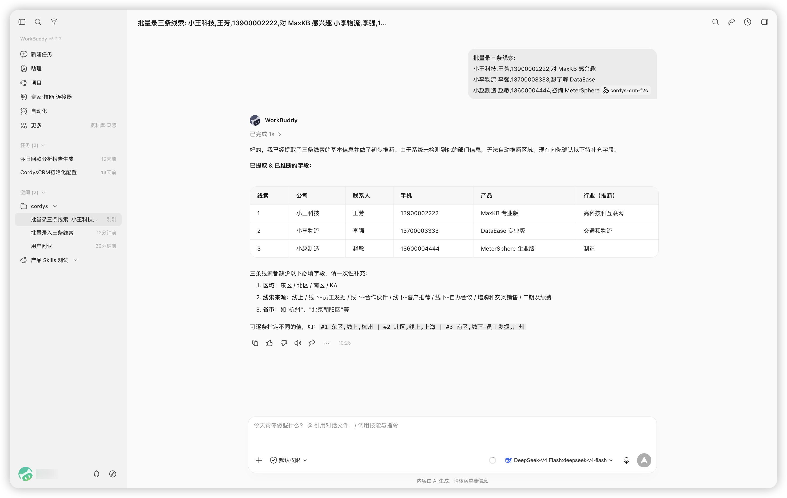
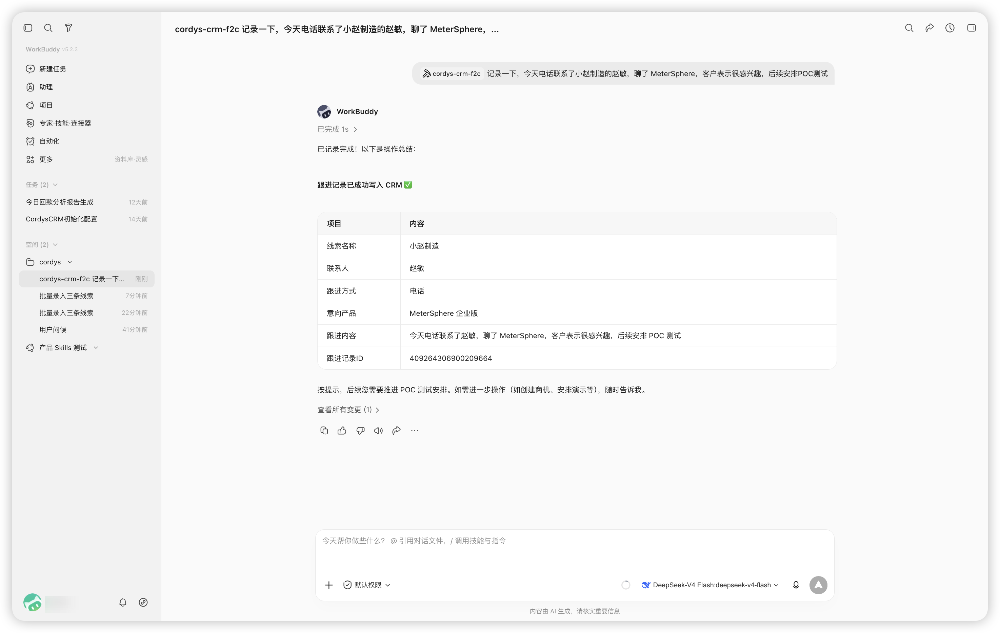
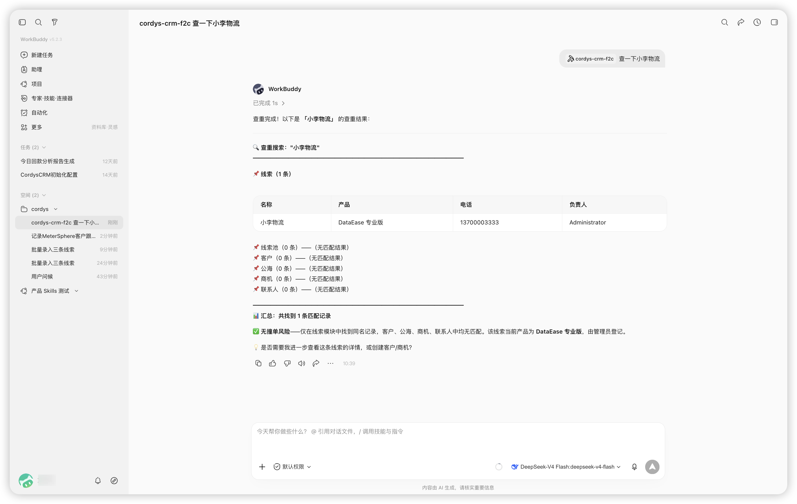
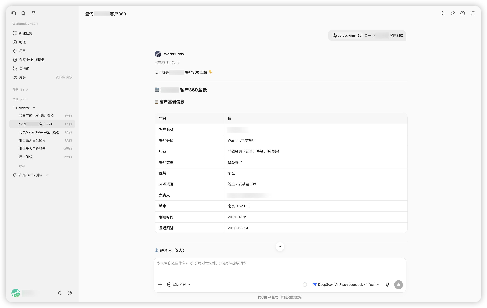
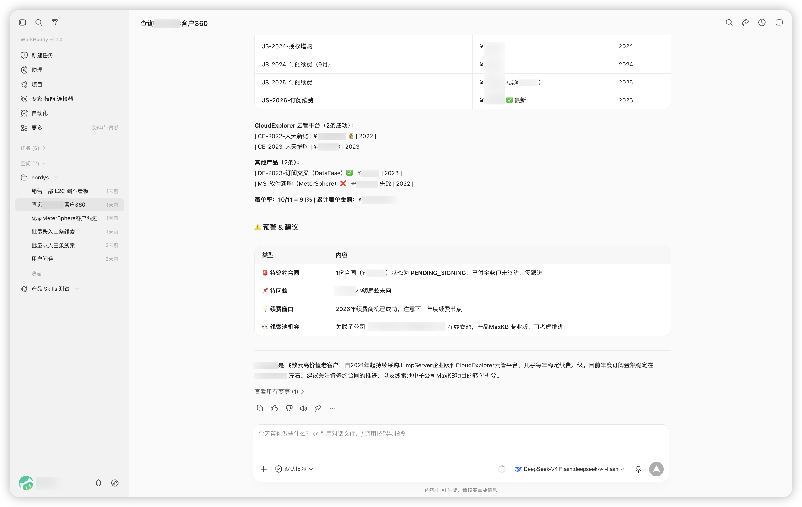
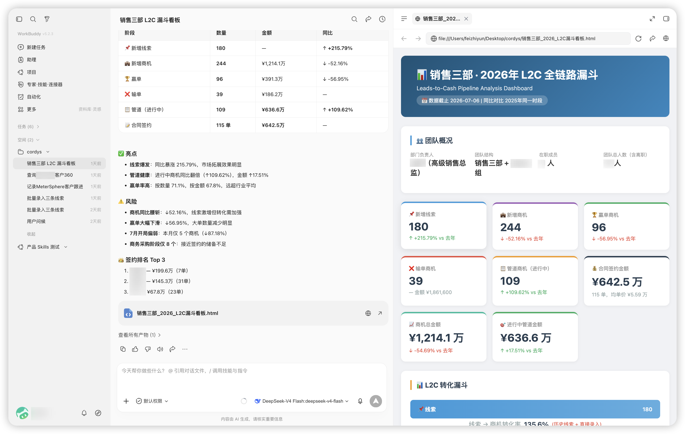
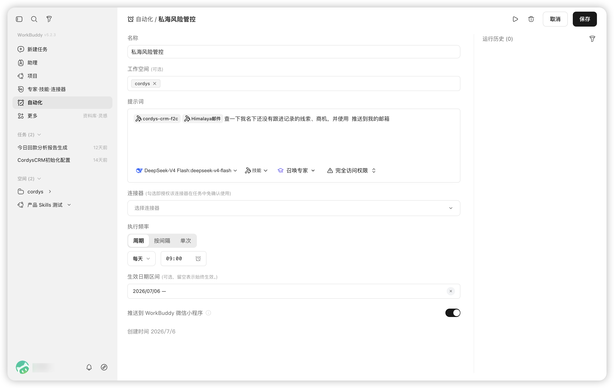
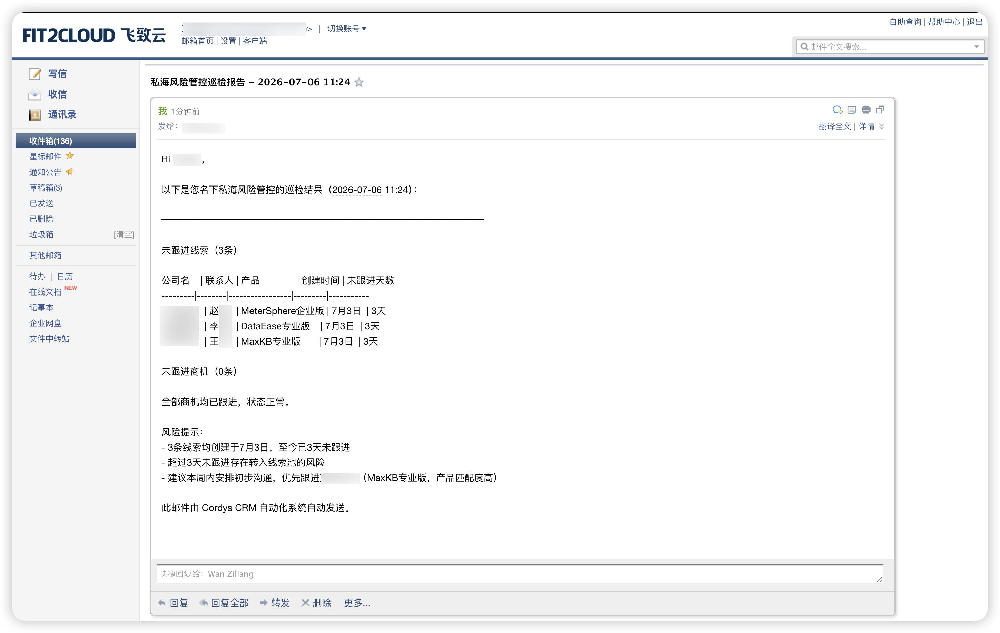

回顾CRM在中国市场的发展历程，我们发现，CRM软件更多的是强调其管理属性，而忽略了其赋能属性。作为企业级的销售团队运营平台，"规范和记录所有销售行为"的管理能力固然重要，但是CRM不应该只是销售管理的工具。作为企业一线销售和各级销售管理人员日常最高频使用的软件产品，CRM也是撬动销售运营效率提升的关键杠杆。CRM的用户，尤其是一线销售及基层管理者，强烈希望通过CRM提升自身运营效率。目前，AI的发展让整个CRM行业有机会用全新的思路去破解这个问题，真正做到让AI赋能销售团队的每个成员和销售活动的每一个环节，让CRM产品实现从"要我用"到"我要用"的转变。
企业内CRM用户群体分成三类，即一线销售及基层管理者（简称为一线用户）、销售团队中高层管理者（简称为管理用户）和公司销售运营支撑团队（简称为支撑用户）。这三类用户对于CRM的提效问题都有微辞，一线用户在这方面的抱怨更多。比如，一线用户面临的业务场景非常多样化、团队成员流动性较大，而且还可能存在部分用户和公司在客户信息归属权上博弈的问题。要解决这些问题，我们还是要回到一个基本理念，就是如何让所有用户都能从CRM的使用中获益。也就是说，如何让CRM成为每个用户的助手。
要想达到这个目标，其背后的逻辑也很简单，即"让每个用户使用产品获得的收益远远高于付出的成本"。这也正是AI对CRM使用体验破局的关键：即大幅降低用户（尤其是一线用户）使用产品的成本和大幅提升用户（尤其是一线用户）从产品中得到的收益。接下来，让我们分别深入理解成本和收益这两个具体的破局方向。
AI降低CRM的使用成本
用户在使用CRM时主要的行为可以分为记录录入、信息检索和统计分析三类。但不同类型的用户使用CRM的场景有所差异。比如，一线用户的工作内容主要是和大量客户进行高频沟通交流，并且大部分时候都在外勤状态，他们对于系统访问的便捷性要求很高；而另外两类用户则更多关注系统功能的完善性。目前，用户使用CRM的成本优化瓶颈主要体现在以下几方面：
■ 系统访问不便捷：虽然CRM普遍提供了全平台访问能力，但当前大部分企业用的工作主平台已经是企业协同办公平台（例如企业微信、钉钉和飞书等），尤其是其中的IM（Instant Messenger，即时通讯）工作界面。虽然大部分CRM也可以嵌入到协同办公平台，但其访问方式还是没有IM那样简单快捷。而且，大部分CRM内的数据还没有和企业办公平台内的邮件、联系人、日程、文档等服务打通，和本地办公电脑也没有形成很好地联动。这就导致用户需要频繁在不同系统内切换并进行数据搬运。此类操作对于长期处在外勤状态的一线用户是非常不友好的，会导致他们觉得CRM的使用不便利；
■ 系统交互不自然：当前CRM产品的基座基本都是"Lead to Cash"的表单流程，系统交互同样以表单形式为主。这导致用户的录入、更新和查询操作都受到约束。在基于IM的协作模式已经大规模替代了邮件这类传统异步协作方式的当下，最自然的交互方式毫无疑问应该是即时通讯方式；
■ 系统维护压力大：当前CRM用户为了维护自身系统内的数据质量和时效性、满足公司管理规则要求，承担了很多使用维护的压力。目前，用户主要是通过站内通知以及邮件通知来获得提醒，再经过自主决策后，手动执行自身决策。
随着AI带来的智能交互体验以及越来越成熟的Agent机制，用户期待AI可以帮助他们优化使用CRM的成本效益。而AI对CRM使用成本优化方面的赋能主要体现在：
■ 让CRM入驻到用户最主要的AI办公平台，包括企业协作平台的IM界面以及类似WorkBuddy这样的智能办公平台。当然两者都能支持更好，这让用户在使用两类平台时都可以得到访问通道。更进一步，要让CRM能够通过自身的智能体化，打通与其他办公系统的智能编排，让用户在一个界面中即可通过智能体调动多个办公系统完成一个具体的任务目标；
■ 让自然语言成为CRM与用户交互的主要方式。CRM产品应该能够通过自然语言交互理解用户的意图，清晰理解用户的目标，提取用户的输入信息，最终完成与CRM系统的交互并返回结果。当自然语言成为主要交互方式，用户使用平台的成本自然就会大幅度下降（一线用户的体验尤为明显）；
■ 让AI帮助用户维护CRM系统，通过AI定义个人数据的完整性、及时性或者有效性相关任务，并主动提醒。用户要做的仅仅是在收到提醒后做进行决策，然后在AI的辅助下执行决策即可。
AI提升CRM的使用收益
传统CRM在公司的销售团队运营管理以及规范销售互动中起到了非常大的作用。但是传统CRM的用户收益是以较大的管理成本为前提，且很快就会触及天花板。现在，我们需要用AI重新激活CRM产品的使用收益，尤其要为一线用户拓客带来更多的支持。用户的使用收益具体体现在以下几方面：
■ 商机支持：CRM可以充分利用AI在信息收集上的能力，帮助用户（尤其是一线用户）更自主地去发掘CRM系统内外的潜在机会，并对这些机会进行必要的分析评估乃至自主执行。AI的融入让这些机会的获取门槛和获取效率都得到了显著的提升，例如根据客户画像高效筛选公海，根据样板案例检索同类潜在商机并主动匹配CRM内部数据，或者基于公开招标信息和合作伙伴关系网络来发掘隐藏的业务机会等；
■ 拓客指导：CRM可以利用系统记录数据、利用优秀销售总结出来的成功经验模型，对商机推动提供更多的智能化建议，甚至可以在得到用户决策授权的情况下帮助用户完成执行，比如利用如BANT模型，根据当前客户情况进行商机的可靠性评估（这对辅助新销售进行商机阶段的把控很有帮助）；
■ 风险提示：基于AI的数据信息挖掘与分析能力，CRM可以主动提示风险并给出处理建议。例如，通过AI识别长期没有进展的商机，还可以识别团队内某些销售当前销售漏斗的健康度变化。这些都为销售管理者及早介入管控风险提供了支持；
■ 智能分析：基于标准模型的拓客指导和风险提示可以大幅提升CRM的使用收益。除此之外，AI还大幅降低了用户对系统数据开展探索性智能分析的门槛，通过简单的自然语言交互就可以完成数据提取、汇总、统计以及可视化，快速强化销售数据洞察。
落地方案：Cordys CRM×WorkBuddy
AI与CRM结合并在企业的实际环境中落地，飞致云结合自身销售管理需求进行了长期探索，并且已经取得的一些实践成果。AI CRM在企业场景的落地主要涉及大模型、AI网关、AI办公平台以及CRM产品的AI适配这四个层面。
其中，AI模式提供语义理解、推理等能力；AI网关提供了模型的统一对接入口，对不同的大模型进行有效的管理，管控其成本、合规、安全性以及业务连续性；AI办公平台的核心在于提供稳定的Harness机制，让大语言模型的能力能够充分且可靠地发挥出来。同时，AI办公平台要提供良好的用户体验，并且灵活适配各类终端，只有这样才有可能在销售团队全员进行推广。另外，AI办公平台要依托成熟的生态，方便用户在其中集成CRM和其他日常办公产品，最终形成高效协作。
与在CRM产品的AI适配方面，目前主要通过MCP（Model Context Protocol，模型上下文协议）和Skills技能集进行接入。Skills的灵活性与本地执行效率，使其成为了CRM接入智能体平台的主流选择。考虑到CRM系统的高度可配置性，以及用户使用场景的多样化，构建一个高质量的CRM Skills门槛并不低，需要企业投入既懂技术又理解销售业务的人员参与进行持续迭代。
飞致云已经在自身真实环境落地并运营的Cordys×WorkBuddy整合解决方案包括：
■ CRM产品及其AI适配：Cordys CRM是飞致云旗下的开源AI CRM系统，支持本地化部署，提供CRM系统完整的"Lead to Cash"销售管理流程，有完整的用户权限管理体系，社区下载数量超过30万次，具备广泛的社区基础。与此同时，Cordys CRM积极顺应AI行业趋势，推出了基于角色的Cordys CRM Skills（https://github.com/1Panel-dev/CordysCRM-skills）。Cordys CRM Skills不仅提供了一个数据浏览层，更是提供了一个智能层，在用户完成个人API Key绑定后，可以智能判断用户角色，并让AI快速进入该角色，准备好所有的初始化工作。该智能集还为不同角色内置了一系列常见的智能SOP任务，让用户与CRM的日常交互更加直接，有效降低使用门槛，提升交互效率；
■ AI办公平台：通用AI办公平台正处在快速发展期。在国内，WorkBuddy以其执行稳定性表现和良好的用户交互体验迅速占领先机。WorkBuddy支持适配企业微信、微信、钉钉和飞书等主流协同办公平台，提供相对开放的模型接入能力和丰富的接入生态，是非常合适接入AI CRM的AI办公平台；
■ AI门户和AI网关：1Panel企业版提供开箱即用的AI门户和AI网关。AI门户支持内嵌在企业微信工作台中，用户可以通过自助申请的API Key查看模型用量、安装Skills，并且统一访问模型广场和MCP市场；AI网关则提供统一代理访问、席位管理、用量统计和内容合规审计等功能，为内部AI应用提供清晰的网关入口。
■ 大模型：AI CRM对模型的智力、速度和成本都有比较高的要求。考虑到DeepSeek官方API极具性价比的价格，2026年4月发布的DeepSeek V4 Flash模型会是一个非常适合AI CRM场景的模型。
落地成果：飞致云销售管理获益场景总结
基于Cordys×WorkBuddy整合解决方案，飞致云在其百人销售团队中成功实现了AI CRM的落地。在过去一个月，我们持续观察用户交互行为，并且形成了部分高频使用场景，而高频使用很多时候都意味着非常稳定的价值收益。
■ 记录创建场景：当用户需要创建管理对象（例如线索、商机、联系人等）时触发该场景。用户在WorkBuddy中用自然语言方式输入记录信息，AI从中提取重点信息，并进行相关字段合理推演。如遇到缺少必填字段则主动对话提示补全，信息补全后即可自动完成记录创建。支持基于输入信息（例如表格文件）进行批量记录创建。

■ 跟进录入场景：当用户需要快捷录入当前拜访情况时触发该场景。用户在WorkBuddy中用自然语言方式输入跟进情况，AI快速关联相关对象并创建对应跟进记录。智能检测输入内容后，AI可以优化输入结构并给出补充信息建议，从而提高跟进记录的质量。

■ 冲突检测场景：当用户需要快速判断商机是否有冲突风险时触发该场景。用户在WorkBuddy中用自然语言方式输入商机信息，AI快速提取商机关键信息并进行检索，基于冲突规则判断是否存在商机冲突风险，并且可以智能提示相似名称的商机，协助用户进一步开展风险探查。

■ 客户360场景：当用户希望了解某个客户在系统内的全面信息时触发该场景。用户在WorkBuddy中用自然语言方式输入客户名称，AI在系统中全面检索这个客户相关的线索、商机、合同、订单等各维度数据，对于检索到的数据进行智能汇总整理，形成关键要点反馈给用户。


■ 数据统计场景：当用户希望快速就某个主题进行数据统计与分析时触发该场景。用户不需要自行整理任何数据指标，在WorkBuddy中用自然语言方式输入想要进行数据统计与分析的主题，AI就能基于用户的统计需求生成统计代码，进行动态查询并进行数据汇总。AI生成HTML等格式的可视化统计报告，直观展示统计结果。同时，支持通过自然语言快速进行统计迭代和展示优化。

■ 私海管理场景：当用户希望定期对私海进行管理并提示风险时触发该场景。用户通过自然语言向WorkBuddy描述自己的管理任务需求，让WorkBuddy定时执行自动化任务，并且通过邮件等方式向用户提供风险提示及处理建议。用户只需要向WorkBuddy反馈处置风险的决策，WorkBuddy就能根据用户的处置决策，自动化进行风险处置和私海管理。


飞致云已经将上述高频场景固化至Cordys CRM Skills内，以提升其执行效率和执行结果的稳定性。我们还在持续发现越来越多的通用场景，例如公海探宝、业绩预测、商机评估、团队评估以及审批流程智能化改造等，并且计划将其纳入未来的Skills迭代计划中。销售团队普遍反馈，在Cordys×WorkBuddy整合解决方案落地后，与Cordys CRM的交互变得更加智能方便，切实提升了日常工作效率。
想要体验 Cordys CRM 与 WorkBuddy 的 AI 能力？欢迎访问 在线体验 快速感受，或通过 GitHub Skills 仓库 了解更多技术细节。如有问题，欢迎加入 用户论坛 与社区交流。